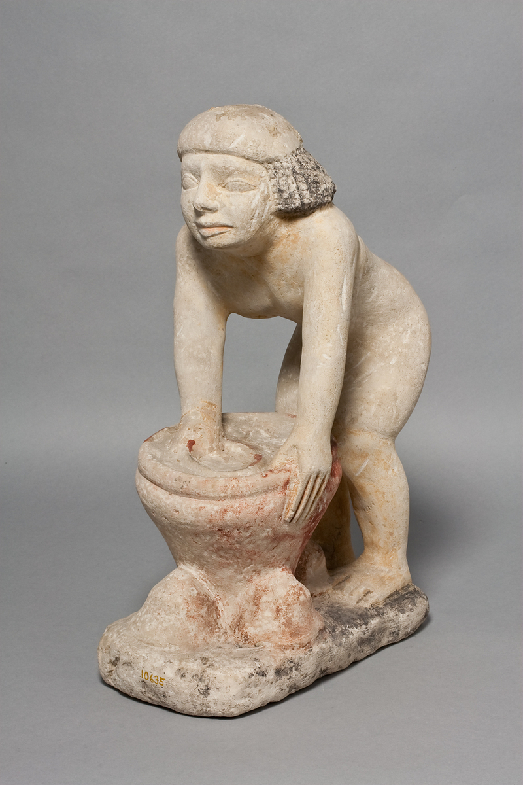
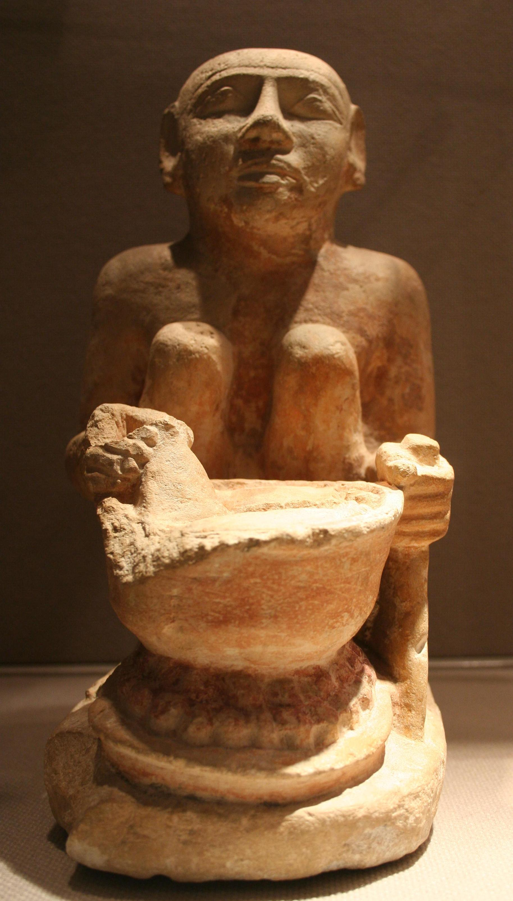
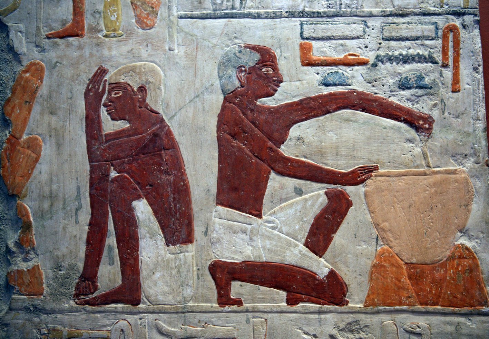

קַלַּחַת qallàḥat – stewpot
Semantic Fields:
Utensils Food Preparation
Author(s):
Johannes C. de Moor, Raymond de Hoop, Paul Sanders *
First published: 2011-03-24
Last update: 2026-06-28
Citation: Johannes C. de Moor, Raymond de Hoop, Paul Sanders, קַלַּחַת qallàḥat – stewpot,
Semantics of Ancient Hebrew Database (sahd-online.com), 2011 (update: 2026)
(WORK IN PROGRESS)
Introduction
Grammatical type: noun fem.
Occurrences: 2x HB (0/2/0); 0x Sir; 0x Qum; 0x Inscr. (Total: 2)
- Nebiim: 1 Sam 2:14; Mic 3:3.
- Text doubtful: See A.1 below.
Text Doubtful
A.1 In MT 1 Sam 2:14 קַלַּחַת occurs in the following phrase: בַכִּיּוֹר אוֹ בַדּוּד אוֹ בַקַּלַּחַת אוֹ בַפָּרוּר. This phrase includes four terms for cooking vessels, which in HALOT are translated as follows:
- כִּיּוֹר, ‘wash basin’, ‘cooking pot’, etc.;
- דּוּד, ‘deep two-handled cooking pot’, ‘basket’;
- קַלַּחַת, ‘pot, cauldron’;
- פָּרוּר, ‘cooking-pot (ceramic or metal)’.
The critical apparatus of BHS does not refer to any variants with respect to the reading קַלַּחַת, nor with respect to the other three vessels in the phrase. With reference to LXX and 4QSama (see A.2, A.3) Parry (2006) argued that קַלַּחַת was not part of the oldest version of the text. However, MT is supported by Pesh, TgJ, and Vg, which also list four cooking vessels.
A.2 Most of the manuscripts of LXX mention only three cooking vessels, in the accusative, each with its own characteristics:
- τὸν λέβητα τὸν μέγαν (λέβης + μέγας), ‘the large cauldron’;0
- τὸ χαλκίον (variants: χαλκεῖον, χαλκὸν), ‘the bronze cauldron’;
- τὴν κύθραν (variants: κύτραν, χύθραν, χύτραν), ‘the earthen pot’.
These three Greek renderings occur in this order in LXXB: καὶ ἐπάταξεν αὐτὴν εἰς τὸν λέβητα τὸν μέγαν ἢ εἰς τὸ χαλκίον ἢ εἰς τὴν κύθραν, ‘and he thrusted it into the large cauldron and into the bronze cauldron and into the earthen pot’. The deviating order λέβης + μέγας - χύτρα - χαλκεῖον occurs in LXXAnt.1 LXXA mentions the same three cooking vessels in the order of LXXAnt (λέβης + μέγας, χύθρα, χαλκὸν), but in this codex these three are preceded by the phrase εἰς το λουτῆρα, with λουτήρ meaning ‘washing-tub’.2 In the LXX all the earlier occurrences of λουτήρ represent Heb. כִּיּוֹר, with all these occurrences of כִּיּוֹר relating to the bronze washing-tub of the sanctuary (e.g., Exod 30:18, 28; 31:9). The reading εἰς το λουτῆρα in LXXA seems to be a later addition in the LXX tradition, inserted to bring the Greek text more into conformity with MT. Instead, it may also have been part of the original text and have been omitted later, since a λουτήρ, ‘washing-tub’, was not suitable for cooking meat.
A.3 4QSama apparently mentions
only two vessels: בסיר או בׄפ̊רור̊ (col. III line 4), with the end of the preceding line reconstructed as [ בידו והכה] (DJD XVII, 39).
The first vessel mentioned in
4QSama is סיר, which does not occur in MT. According to the editors of 4QSama, the reading סיר in 4QSama is certainly original, because the word λέβης, ‘cauldron’, the first in the list in
LXXB,Ant, mostly represents Heb. סיר.3
In addition to 1 Sam 2:14, λέβης only once seems to be the counterpart of MT’s כִּיּוֹר , namely in 1 Kgs 7:40 (3 Kgdms 7:26). According to BHS, however, the reading הַכִּיֹּרוֹת
in 1 Kgs 7:40 is incorrect and should be הַסִּירוֹת
(cf. MT 1 Kgs 7:45 וְאֶת־הַסִּירוֹת / LXX 3 Kgdms 7:31 καὶ τοὺς λέβητας).
On the other hand, λέβης also reflects דּוּד, the second utensil in MT’s list (cf. 2 Chr 35:13; 1 Esdr 1:13).4
A serious problem regarding the testimony of 4QSama is the fact that the narrative sequence differs between MT and 4QSama: MT’s vv. 13–14 are read as the sequel of 1 Sam 2:16 in 4QSama.
A.4 Due to the textual differences of this chapter in MT and 4QSama, scholars differ with regard to the most original reading. Some tend to give priority to MT’s reading of four vessels, which number in their view decreased subsequently in LXX and 4QSama; e.g., Dietrich 2010:141: ‘Offenbar fand man solche Einzelheiten mancherorts nicht so wichtig, vielleicht auch nicht mehr verständlich, und kürzte sie dementsprechend’. Others give priority the reading of 4QSama and suppose that the list of vessels gradually expanded during the course of transmission.5 However, because MT’s reading of קַּלַּחַת itself is not doubted and presupposed in all LXX retroversions,6 the reading of our lemma is ascertained; cf. also Ancient Versions A.1 below.
1 Root and Comparative Material
A.1 Egyptian: Thomas Lambdin and Maximilian Ellenbogen regard קַלַּחַת as a loan from Egyptian qrḥt, ‘earthen pot’ (WÄS, Bd. 5, 62-3; Hannig, 864).9 James Hoch (SWET, 331-32), however, is of the opinion that Egyptian krḥt, a type of basket for grapes or flowers, as well as Coptic calaht, a pot (Crum, CD 813-14), are loans from the Canaanite word qlḥt. Hoch’s suggestion is unlikely, however, and the Coptic word is better derived from Egyptian qrḥt. The latter is a rather general term for earthen-ware (Vachala 1992:109–11), but the vessel could also be made of metals like silver, gold, or bronze. The Coptic word denotes a blackened cooking pot and serves as a rendering of κύθρα/χύτρα in 1 Sam 2:14 and Mic 3:3. An Egyptian goddess bearing the name qrḥt is attested, but it is unclear whether she had anything to do with the vessel.
A.2 Akkadian: If qlḥ(t) was the original form, a further cognate might be the Assyrian vessel qulliu, plural qulliātu, a type of bowl or pot in which food was prepared and/or served. Sometimes it appears to be made of clay, but more often of bronze (CAD Q: 297-98; Salonen, Hausgeräte, 2:110-11). It is hardly a jar (cf. AHw, 926: ‘ein Ton- od Bronzekrug’), in contrast to Heb. קולית, Syr. qūlā, qūletā and Arab. qillah which all denote a type of jar or pitcher, not a cooking pot.
A.3 Ugaritic: Another cognate appears to be Ugaritic CHECK qlḫt, attested in KTU 5.22:16. This is a list of seemingly unconnected words and names. Apparently the tablet is a scribal exercise. The circumstance that the preceding two entries have to do with the hand-mill and the following entry is qmḫ, ‘flour’, suggests that the pot was regularly used for recipes containing flour. However, the scribe was very inexperienced and often confused the ḥ that was dictated to him with ḫ (for example in qmḫ = qmḥ; cf. Dietrich et al. 1975:166). Therefore, it is possible that the original Ugaritic form was qlḥt, which in turn might suggest a connection with the Ugaritic divine name qlḥ.10
A.4 Rabbinic Hebrew: bBerakhot 56b contains a quotation of Mic 3:3b, but the context does not cast light on the character of קַּלַּחַת.
The other occurrences of קַּלַּחַת are also derived from Mic 3:3: כְּבָשָׂר בְּתוֹךְ קַלָּחַת in bSanhedrin 110b;
כְּבָשָׂר בְּקַלָּחַת in bBava Batra 74a.
Num. R., XVIII.2 also derives from Mic 3:3 and
does not help to elucidate the meaning of the word in Classical Hebrew.
bBat/bSanh, however, compares the heat to which the
קלחת is exposed to the fire of hell and seems to indicate that the meat was turned over and over in it (הדר) while searing.
2. Formal Characteristic
A.1 Feminine word with the qattalat form; see BL, 476-77, §61yβ-aγ.
3. Syntagmatics
A.1 קַּלַּחַת, preceded by the preposition בְּ, ‘into’, is complement to the verb נכה hiph., ‘to thrust’, in 1 Sam 2:14.
A.2 קַּלַּחַת is nomen rectum of בְּתוֹךְ, ‘in (the midst of)’, in Mic 3:3. It is part of a nominal clause: וּכְבָשָׂר בְּתוֹךְ קַלָּחַת, ‘and like meat in (the midst of) a caldron’.
4. Ancient Versions
Septuagint (LXX)12
- χαλκίον, ‘copper cauldron’,21 or κ/χύθ/τρα, ‘earthen pot’:22 1 Sam 2:14; see A.1 below;
- χύτρα, ‘earthen pot: receptacle for meat’:23 Mic 3:3.
Peshitta (Pesh)
- ܩܪܕܠܐ (qerdelā), ‘large hanging pot’:24 1 Sam 2:14;
- ܩܕܪܐ (qedrā), ‘pot’:25 Mic 3:3 (in 1 Sam 2:14 used for פָּרוּר).
Targum (Tg)
- קדרא, ‘pot’:26 1 Sam 2:14; Mic 3:3.
Vulgate (Vg)
- olla, ‘pot or jar (esp. for cooking)’:27 1 Sam 2:14; Mic 3:3.
A.1 It is questionable whether each of the three cooking vessels mentioned in the LXX of 1 Sam 2:14 (1 Kgdms 2:14) can be identified with one of the four cooking vessels mentioned in MT. In LXXB and LXXAnt the three cooking vessels are mentioned in different orders (see Text Doubtful A.2 above):
- LXXB: λέβης + μέγας - τὸ χαλκίον - κύθρα (supported by VL28)
- LXXAnt: λέβης + μέγας - χύτρα - χαλκεῖον
As mentioned above, MT has four cooking utensils: כִּיּוֹר, דּוּד, קַּלַּחַת, and פָּרוּר. Elsewhere, the LXX represents both קַּלַּחַת (Mic 3:3) and פָּרוּר (Num 11:8; Judg 6:19; also פָּארוּר in Joel 2:6; Nah 2:11) by χύτρα, while χαλκεῖον represents סִיר, ‘sooking-pot’, ‘tub’ (Job 41:23; 2 Chron 35:13; cf. 1 Esd 1:13).
The problem starts with the question for which Heb. word the Gr. word λέβης is the counterpart. This is important in view of the reading in 4QSama, reading only two cooking utensils: סיר and פרור (see Text Doubtful A.3 above). Because λέβης, the first utensil in the LXX text, is used mostly as the counterpart of Heb. סִיר, scholars assume that the Heb. Vorlage of LXX read סִיר similarly to 4QSama instead of MT’s כִּיּוֹר. The latter reading כִּיּוֹר may orginally have been a defective reading כִּיֹּר, which was a misreading for סִיר. However, this is not completely conclusive because λέβης is also used as rendering of דּוּד, the second utensil in MT’s list (cf. 2 Chron 35:13; 1 Esdr 1:13). LXX’s λέβης thus equals 4QSamB’s סיר/MT’s כִּיּוֹר but also MT’s דּוּד, which may suggest that LXX had a comparable list of utensils in its Vorlage as MT and condensed the list by using one rendering for the first two utensils.31 If thus LXX’s first word λέβης is the possible eaquivalent of MT’s first and second word, than LXX’s second word, χαλκίον (or LXXAnt’s χύθρα), may be the renderring for MT’s קַּלַּחַת.
5. Lexical/Semantic Fields
A.1 In MT 1 Sam 2:14 קַלַּחַת occurs in a list of cooking vessels: ‘in the כִּיּוֹר, or in the דּוּד, or in the קַלַּחַת, or in the פָּרוּר’.
A.2 In Mic 3:3 קַלַּחַת occurs in parallelism with סִיר, ‘kettle’. The noun סִיר occurs also in 1 Sam 2:14 in 4QSama (see Text Doubtful A.3 above).
A.3 In both occurrences (1 Sam 2:13–14; Mic 3:3) the קַלַּחַת is used to prepare בָּשָׂר, ‘meat’.
6. Exegesis
A.1 All the renderings of the word קַלַּחַת in lexica and more specific word studies are rather general. James Kelso (CVOT, 31 no. 76) shortly states that ‘the vessel is used for cooking a meat stew’, whereas Alexander Honeyman (1939:90) concludes that existing evidence is insufficient ‘to fix this cooking-vessel more nearly’. The word is rendered as ‘caldron’ (BDB, 886; KBL 839), ‘cauldron, pot [for cooking]’ (DCH vii:255; similarly HALOT, 1102); ‘olla, lebes carni coquenda’ (Gesenius, TPC, 1216); ‘Topf, Kessel’ (GB, 714; KBL 839; HALAT, 1030); ‘Kessel, Schüssel’ (HCHAT, 2:316); ‘Pfanne uä’ (HAWAT, 409); and as ‘puchero, olla’ (DBHE, 636; similarly LHA, 724).
6.1 Literal Use
A.2 According to 1 Sam 2:13-14 the קַלַּחַת was a vessel used in the sanctuary at Shiloh for preparing a sacrificial meal (זֶבַח). Presumably the priests, sons of Eli, had a right to take a share from the meat (בָּשָׂר). A servant of the priest would come along ‘when the meat was cooking’ (כְּבַשֵּׁל הַבָּשָׂר, v. 13) and would spear a chunk on behalf of the priest with his three-pronged fork (ְהַמַּזְלֵג שְׁלֹשׁ־הַשִּׁנַּיִם). He would thrust (נכה hiph.) the fork into the pan (כִּיֹּור), or kettle (דּוּד), or קַלַּחַת, or pot (פָּּרוּר) to bring up (עלה hiph.) the piece. Both the circumstance that the vessels mentioned were intended for preparing a communal festive meal and the use of a three-pronged fork suggest that all these vessels were fairly large and had a wide opening. The use of the verb עלה hiph. might suggest that they were all fairly deep. The material of which the vessel was made is not mentioned.
6.2 Figurative Use
A.3 Mic 3:2-3 accuses the leaders of Israel of tearing off the skin from the people (פשׁט hiph.), and their flesh (שְׁאֵר) from their bones, and even of eating the flesh of the people, and flaying their skin from them. Finally they ‘break their bones in pieces, and spread them out in a kettle (בַּסִּיר), like flesh (כְבָשָׂר) in a קַלַּחַת’. Obviously this text does not accuse the leaders of cannibalism. He compares their policy of dispossessing small farmers (cf. 2:1-2, 9), tearing off the clothes of peaceful passers-by (cf. 2:8, the same verb פשׁט hiph.) and misleading innocent people (3:4-11) with a butcher’s trade.30 Nothing here suggests that the קַלַּחַת is a special cultic vessel. Again, the material of which it was made remains unclear. The verb פרשׂ, ‘to spread out’, suggests a fairly wide vessel suitable for cooking chunks of meat approximately as long as pieces of bone. Apparently the סִיר was a similar vessel since both are ruled by the same verb in Mic 3:3. Since the סִיר is for cooking the bones whereas the קַלַּחַת is for the meat, the latter might be a cooking pot of higher quality. The spreading out of the chunks suggests a fairly flat bottom.
6.3. Illustrations
A.4 Despite the fact that some cooking vessels such as סִיר, דּוּד, and פָּרוּר could be identified with archaeological findings,39 it is impossible to provide an illustration of a קַלַּחַת.40 There is an abundance of cooking vessels from archaeological excations, which may give some ideas about the forms of such receptacles.41 In addition to these archaeological findings, there are illustrations of cooking and baking activity from the ancient Near East. See, e.g., the following two small statues (see also Long 2009:280).

Female servant stirring in a cooking vessel, ISAC Museum Chicago.

Servant stirring in a cooking vessel, Ägyptisches Museum Leipzig.
See further the following illustration from a bread baking scene in Ancient Egypt, showing the interest in the production of food also in the afterlife:

Scene from production of bread42
7 Conclusion
The textual evidence suggests that a קַלַּחַת is a fairly deep earthen or metal cooking pot with a rather wide opening. In this vessel chunks of meat were spread out on the flat or concave bottom, apparently for maximum exposure to the heat, thus probably for a first searing. This process also explains why people replaced the vessel by metal versions (Egypt, Assyria) if they could afford it. The association with flour in the Ugaritic text suggests that after the searing water was added for prolonged simmering (בשׁל) and that finally the broth was thickened with flour to obtain what we would call a stew. Therefore, the best rendering might be ‘stewpot’.
Bibliography
For the abbreviations see the List of Abbreviations.
Johannes Belsheim, Palimpsestus Vindobonensis antiqvissimae Veteris Testamenti: Translationis Latin fragmentaæ, Christianiæ: Libraræ P.T. Mallingi.
Jean Bottéro, Textes culinaires mésopotamiens, Winona Lake: Eisenbrauns.
Alan England Brooke, Norman McLean, Henry St. John Thackeray, The Old Testament in Greek according to the text of Codex Vaticanus, supplemented from other uncial manuscripts with a critical apparatus containing the variants of the chief ancient authorities for the text of the LXX, Vol. 2 1: I-II Samuel.
Kevin J. Cathcart, ‘Notes on Some Hebrew Words for Vessels and Their Cognates’, Rivista degli studi orientali 47:55-58
Johannes C. de Moor, ‘The Semitic Pantheon of Ugarit’, UF 2:187–28.
Johannes C. de Moor, ‘Studies in the New Alphabetic Texts from Ras Shamra, II’, UF 2:303–27.
Johannes C. de Moor, Micah (HCOT) Leuven: Peeters.
Manfried Dietrich, Oswald Loretz, Joaquín Sanmartín, ‘Zur ugaritischen Lexikographie XIII’, UF 7:157-70.
Walter Dietrich, ‘Doch ein Text hinter den Texten? Vorläufige textkritische Einsichten eines Samuel-Kommentators’, in: Hugo & Schenker 2010:133–59.
Natalio Fernández Marcos, José Ramón Busto Saiz, El texto antioqueno de la Biblia griega, I: 1-2 Samuel (TECC 50), Madrid: Instituto de Filología, C.S.I.C.
Volkert Haas, Geschichte der hethitischen Religion, Leiden: Brill.
Alexander M. Honeyman, ‘The pottery vessels of the Old Testament’, PEQ 71:76-90.
Philippe Hugo, Adrian Schenker (eds), Archaeology of the Books of Samuel: The Entangling of the Textual and Literary History (SVT, 132), Leiden: Brill.
Jürg Hutzli, Die Erzählung von Hanna und Samuel: Textkritische und literarische Analyse von 1. Samuel 1–2 unter Berücksichtigung des Kontextes (ATANT, 89), Zürich: Theologischer Verlag Zürich.
Jürg Hutzli, ‘Theologische Textänderungen im Massoretischen Text und in der Septuaginta von 1–2 Sam’, in Hugo and Schenker 2010:213–36.
Thomas O. Lambdin, ‘Egyptian Loan Words in the Old Testament’, JAOS 73:145-55.
V. Philips Long, ‘1 Samuel’, ZIBBC, 2:266–411.
Martin J. Mulder, 1 Kings, Volume I: 1 Kings 1–11 (HCOT) Leuven: Peeters.
Benjamin J. Noonan, Non-Semitic Loanwords in the Hebrew Bible: A Lexicon of Language Contact (LSAWS, 14), University Park, Pennsylvania: Eisenbrauns.
Donald W. Parry, ‘“How Many Vessels”? An Examination of MT 1 Sam 2:14/4QSama 1 Sam 2:16’, in: Peter W. Flint, Emanuel Tov, and James C. VanderKam (eds.), Studies in the Hebrew Bible, Qumran, and the Septuagint Presented to Eugene Ulrich (SVT, 101), Leiden: Brill, 84–95.
Alicia Rios, ‘The Olla’, Gastronomica: The Journal of Food and Culture 1:22-4.
Willem F. Smelik, The Targum of Judges (OTS, 36) Leiden: Brill.
Julio Trebolle, ‘Textual Criticism and the Composition History of Samuel: Connections between Pericopes in 1 Samuel 1–4’, in: Hugo & Schenker 2010:261–85.
Eugene Ulrich, ‘Textual History of Samuel’, THB 1B:301–09.
Břetislav Vachala, ‘Fragment einer Töpferszene aus der Ptahschepses-Mastaba’, GM 130: 109-11.
Mirjam van der Vorm-Croughs, The Old Greek of Isaiah: An Analysis of Its Pluses and Minuses (Septuagint and Cognate Studies, 61), Atlanta: Society of Biblical Literature.
Notes
The first version of this article was published for the KLY project on March 24, 2011, as Johannes C. de Moor, ‘קַלַּחַת – stewpot’. For the Semantics of Ancient Hebrew Database the article was thoroughly reworked and expanded by his former PhD students Raymond de Hoop and Paul Sanders.
-
The translations of the Greek are based on GELS. ↩
-
LXXAnt: εἰς τὸν λέβητα τὸν μέγαν ἢ εἰς τὴν χύθραν ἢ εἰς τὸ χαλκεῖον (Fernández Marcos & Busto Saiz 1989:8). ↩
-
LXXA: εἰς τὸν λουτῆρα ἢ εἰς τὸν ἢ εἰς τὸν λέβητα τὸν μέγαν ἢ εἰς τὴν χύθραν ἢ εἰς τὸν χαλκὸν. The repetition of ἢ εἰς τὸν after τὸν λουτῆρα is erroneous and does not occur in ms c2 (127), which just like LXXA does have the phrase εἰς τὸν λουτῆρα ἢ before εἰς τὸν λέβητα; see Brooke & McLean 1927:7 and Fernández Marcos & Busto Saiz 1989:8. For references to some less important additional variants in other Greek mss, see the same literature. ↩
-
Cf. HRCS2, 863c; see also Parry 2006:93; Trebolle 2010:275–76. ↩
-
See GHTIS, 74, giving three occurrences for דּוּד, and five for סִיר, whereas HRCS2, 863c lists 21 occurrences; cf. also Hützli 2010:217, n. 14. ↩
-
See DJD XVII, 42; Trebolle 2010; see especially Parry 2006, esp. 84–85. ↩
-
See DJD XVII, 42; Parry 2006:87; Trebolle 2010:276. ↩
-
Lambdin 1953: 154; FWOT, 149; see also HAL, 1030; HALOT 1102. ↩
-
De Moor 1970a:225; De Moor 1970b:317; for parallels, cf. Haas 1994:520-38. ↩
-
The translations of the Greek are based on GELS. ↩
-
LEH3, 659; GELS, 728. ↩
-
LEH3, 359; GELS, 417, κύθρας is a spelling variant of χύτρας. ↩
-
GELS, 738; LEH1, 521: ‘earthen pot’; LEH3, 670: ‘earthen pot’; LSJ, 2013: ‘earthen pot, pipkin’. ↩
-
Payne Smith, CSD, 518; Sokoloff, SLB, 1402: ‘pot’. ↩
-
Payne Smith, CSD, 491; Sokoloff, SLB, 1321–22. The latter lexicon does not take קַלַּחַת as the Hebrew counterpart but סִּיר from the preceding clause. ↩
-
Sokoloff, DJPA, 476: ‘pot’ (of earthenware or bronze, put on a stove); Levy, CWT, 2:346: ‘Kochgeschirr, Kessel, Topf’. ↩
-
OLD, 1246; similarly Lewis & Short, LD, 1263. ↩
-
According to Palimpsestus Vindobonensis, reading ??; cf. Belsheim 1885:7. ↩
-
On cannibalism and the content of Mic 3:3, see De Moor 2020:172–74. ↩
-
Condensation as translation technique in the LXX is described in, inter alii, Van der Vorm-Croughs 2014:187–200. This translation technique is also known from the Targumim. Smelik (1995:97) labelled this technique as ‘minimalising’. ↩
-
See CVOT, 27 no. 63, with 48 fig. 16, for סִיר; 18 no. 39, with 48 fig. 17, for דּוּד; 29 no. 68, with 48 fig. 19, for פָּרוּר (similarly in BHH 3:2006–07). ↩
-
According to CVOT, 31 no. 76, קַּלַּחַת ‘is a cooking-pot but there is no further clue as to which specific member of the cooking-pot family is so designated’; similarly BHH 3:2007. ↩
-
Cf., e.g., Honeyman 1939, plates 18–20; CVOT, 47–48; ANEP, 44–45 ## 147–48; BRL, 168–85). ↩
-
Description: One man makes cake paste, another one monitors the baking of bread molds. Limestone (2500-2350 BC) 5th dynasty. Paris, Musee Du Louvre. ↩